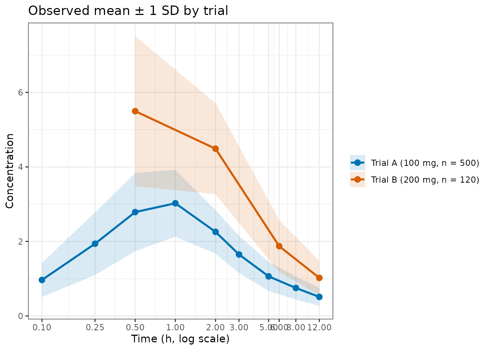
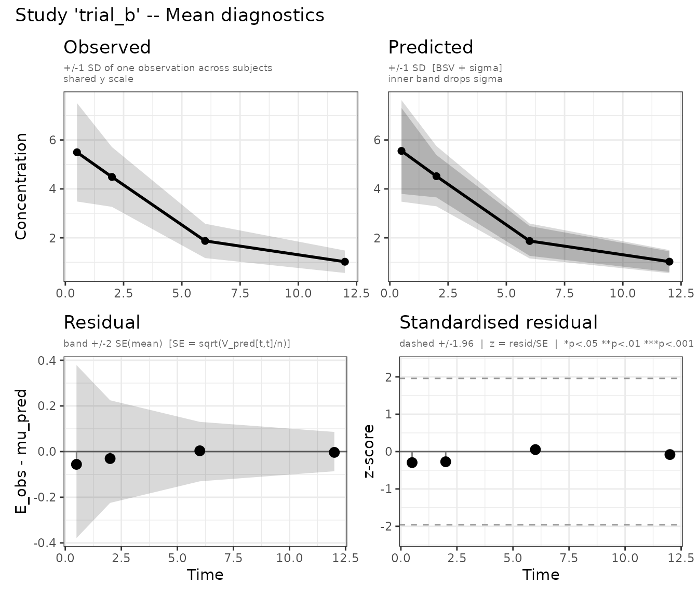

Why multiple studies?
Passing several studies to admControl() fits the model
to all of them simultaneously, minimising the sum of per-study NLLs
under a shared set of population parameters. This is
meta-analysis — the core use case for aggregate-data
modelling: you have summary statistics from multiple trials (which may
differ in dose, sample size, or observation schedule) and want a single
population model consistent with all of them. Each study’s
E, V and n can come from a
digitised figure (see
vignette("aggregate-data", package = "admixr2")) or from
that study’s own published model (see
vignette("datagen", package = "admixr2")).
Splitting examplomycin into two cohorts
We partition the 500 examplomycin subjects into two cohorts of 250 and compute separate aggregate statistics for each:
library(admixr2)
library(rxode2)
library(nlmixr2)
library(ggplot2)
data("examplomycin")
obs <- examplomycin[examplomycin$EVID == 0, ]
obs <- obs[order(obs$ID, obs$TIME), ]
times <- sort(unique(obs$TIME))
ids <- unique(obs$ID)
dv_mat <- matrix(NA_real_, nrow = length(ids), ncol = length(times))
for (i in seq_along(ids)) {
sub <- obs[obs$ID == ids[i], ]
dv_mat[i, ] <- sub$DV[order(sub$TIME)]
}
# Alternate subjects into two equal cohorts
idx1 <- seq(1, length(ids), by = 2) # rows 1, 3, 5, ... → cohort 1
idx2 <- seq(2, length(ids), by = 2) # rows 2, 4, 6, ... → cohort 2
E1 <- colMeans(dv_mat[idx1, ]); V1 <- cov.wt(dv_mat[idx1, ], method = "ML")$cov; n1 <- length(idx1)
E2 <- colMeans(dv_mat[idx2, ]); V2 <- cov.wt(dv_mat[idx2, ], method = "ML")$cov; n2 <- length(idx2)Comparing observed profiles across cohorts
Before fitting, visualise the raw summary statistics to confirm the two cohorts are comparable (both drawn from the same population here):
df_obs <- rbind(
data.frame(cohort = "Cohort 1", time = times,
mean = E1,
lo = E1 - sqrt(diag(V1)),
hi = E1 + sqrt(diag(V1))),
data.frame(cohort = "Cohort 2", time = times,
mean = E2,
lo = E2 - sqrt(diag(V2)),
hi = E2 + sqrt(diag(V2)))
)
ggplot(df_obs, aes(x = time, y = mean, colour = cohort, fill = cohort)) +
geom_ribbon(aes(ymin = lo, ymax = hi), alpha = 0.15, colour = NA) +
geom_line(linewidth = 1) +
geom_point(size = 2.5) +
scale_x_log10(breaks = times, labels = times) +
scale_colour_manual(values = c("Cohort 1" = "#0072B2", "Cohort 2" = "#D55E00")) +
scale_fill_manual( values = c("Cohort 1" = "#0072B2", "Cohort 2" = "#D55E00")) +
labs(title = "Observed mean ± 1 SD by cohort",
x = "Time (h, log scale)",
y = "Concentration",
colour = NULL, fill = NULL) +
theme_bw()
Observed mean ± 1 SD for each cohort on a log time axis.
Model definition
pk_model <- function() {
ini({
tcl <- log(5) ; label("Log clearance (L/hr)")
tv1 <- log(10) ; label("Log central volume (L)")
tv2 <- log(30) ; label("Log peripheral volume (L)")
tq <- log(10) ; label("Log inter-compartmental CL (L/hr)")
tka <- log(1) ; label("Log absorption rate constant (1/hr)")
prop.sd <- c(0, 0.2); label("Proportional residual error SD")
eta.cl ~ 0.09
eta.v1 ~ 0.09
eta.v2 ~ 0.09
eta.q ~ 0.09
eta.ka ~ 0.09
})
model({
cl <- exp(tcl + eta.cl)
v1 <- exp(tv1 + eta.v1)
v2 <- exp(tv2 + eta.v2)
q <- exp(tq + eta.q)
ka <- exp(tka + eta.ka)
d/dt(depot) <- -ka * depot
d/dt(central) <- ka * depot - (cl/v1 + q/v1) * central + (q/v2) * peripheral
d/dt(peripheral) <- (q/v1) * central - (q/v2) * peripheral
cp <- central / v1
cp ~ prop(prop.sd)
})
}Fitting with two studies
Pass both cohorts as a named list. Each entry may independently
specify times, ev, V,
n, and method:
fit_multi <- nlmixr2(
pk_model, admData(), est = "admc",
control = admControl(
studies = list(
cohort1 = list(E = E1, V = V1, n = n1,
times = times, ev = rxode2::et(amt = 100)),
cohort2 = list(E = E2, V = V2, n = n2,
times = times, ev = rxode2::et(amt = 100))
),
n_sim = 5000L,
cov_n_sim = 10000L,
maxeval = 300L,
seed = 1L
)
)
print(fit_multi)
[1m──
[34mnlmix
[39m
[31mr²
[39m
[33madmc
[39m ──
[22m
OBJF AIC BIC Log-likelihood
admc -3690.835 -3668.835 -3598.305 1845.418
[1m── Time (sec
[33mfit_multi
[39m
[34m$time
[39m): ──
[22m
optimize covariance elapsed
1 45.291 10.446 55.737
[1m── Population Parameters (
[33mfit_multi
[39m
[34m$parFixed
[39m or
[33mfit_multi
[39m
[34m$parFixedDf
[39m): ──
[22m
[1m
[1mParameter
[0m
[0m
[1mEst.
[0m
[1m
[1mSE
[0m
[0m
[1m%RSE
[0m
[1m
[1mtcl
[0m
[0m Log clearance (L/hr) 1.601 0.01635 1.021
[1m
[1mtv1
[0m
[0m Log central volume (L) 2.314 0.08719 3.768
[1m
[1mtv2
[0m
[0m Log peripheral volume (L) 3.402 0.04007 1.178
[1m
[1mtq
[0m
[0m Log inter-compartmental CL (L/hr) 2.285 0.02132 0.9332
[1m
[1mtka
[0m
[0m Log absorption rate constant (1/hr) 0.02423 0.08198 338.4
[1m
[1mprop.sd
[0m
[0m Proportional residual error SD 0.1984
[1mBack-transformed(95%CI)
[0m
[1mBSV(CV%)
[0m
[1mShrink(SD)%
[0m
[1m
[1mtcl
[0m
[0m 4.958 (4.802, 5.12) 32.8
[1m
[1mtv1
[0m
[0m 10.12 (8.528, 12) 33.8
[1m
[1mtv2
[0m
[0m 30.03 (27.76, 32.48) 32.0
[1m
[1mtq
[0m
[0m 9.822 (9.42, 10.24) 33.4
[1m
[1mtka
[0m
[0m 1.025 (0.8725, 1.203) 31.2
[1m
[1mprop.sd
[0m
[0m 0.1984
Covariance Type (
[33mfit_multi
[39m
[1m
[34m$covMethod
[39m
[22m):
[1mr
[22m
No correlations in between subject variability (BSV) matrix
Full BSV covariance (
[33mfit_multi
[39m
[1m
[34m$omega
[39m
[22m)
or correlation (
[33mfit_multi
[39m
[1m
[34m$omegaR
[39m
[22m; diagonals=SDs)
Distribution stats (mean/skewness/kurtosis/p-value) available in
[1m
[34m$shrink
[39m
[22m
Censoring (
[33mfit_multi
[39m
[1m
[34m$censInformation
[39m
[22m): No censoring
Minimization message (
[33mfit_multi
[39m
[1m
[34m$message
[39m
[22m):
NLOPT_XTOL_REACHED: Optimization stopped because xtol_rel or xtol_abs (above) was reached. Per-study diagnostic plots
plot() automatically produces separate panels for each
study. Panel names follow the pattern mean_<study>
and cov_<study>:
plots <- plot(fit_multi, which = "mean")Mean diagnostics for both cohorts (one panel per study).

Mean diagnostics for both cohorts (one panel per study).
names(plots)
#> [1] "mean_cohort1" "mean_cohort1_obs" "mean_cohort1_pred"
#> [4] "mean_cohort1_resid" "mean_cohort1_std_resid" "mean_cohort2"
#> [7] "mean_cohort2_obs" "mean_cohort2_pred" "mean_cohort2_resid"
#> [10] "mean_cohort2_std_resid"Access individual panels to compare studies side by side:
plots$mean_cohort1
plots$mean_cohort2
# Combine with patchwork if installed
if (requireNamespace("patchwork", quietly = TRUE)) {
patchwork::wrap_plots(plots, ncol = 1)
}Different doses and schedules
Studies may differ in any aspect. A typical multi-study setup from a drug development programme:
fit_program <- nlmixr2(
pk_model, admData(), est = "admc",
control = admControl(
studies = list(
phase1_50mg = list(E = E_50, V = V_50, n = 30L,
times = c(1, 2, 4, 8),
ev = rxode2::et(amt = 50)),
phase2_100mg = list(E = E_100, V = V_100, n = 120L,
times = c(0.5, 1, 2, 4, 8, 12),
ev = rxode2::et(amt = 100)),
phase2_200mg = list(E = E_200, V = V_200, n = 115L,
times = c(0.5, 1, 2, 4, 8, 12),
ev = rxode2::et(amt = 200))
),
n_sim = 5000L,
maxeval = 1000L,
seed = 1L
)
)Studies with a diagonal V (or a plain vector of variances) are
automatically assigned method = "var", avoiding the O(n_t³)
Cholesky solve when the off-diagonal covariance structure is
unavailable.
See also
-
From a published figure to E, V and
n — prepare each study’s
E,Vandn - Several observed compartments — several outputs per study
- Estimator comparison